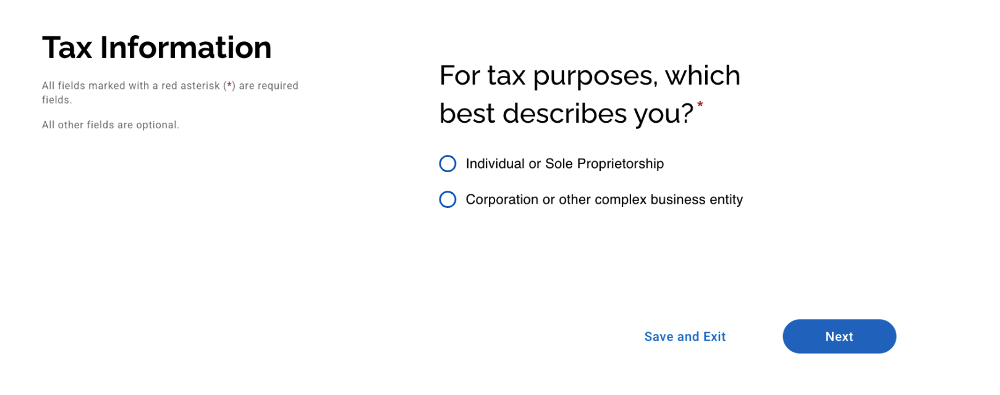
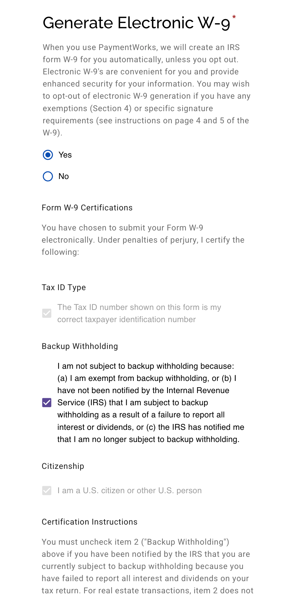
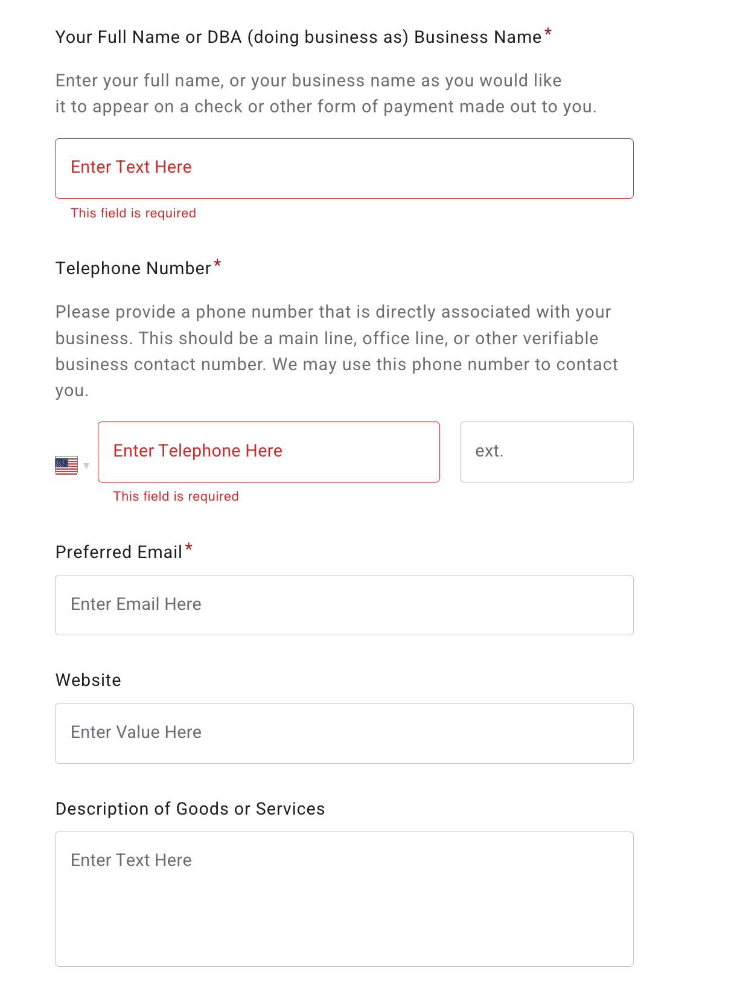
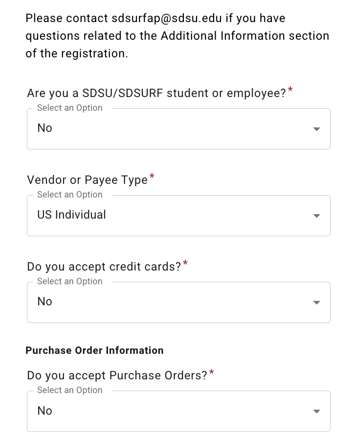
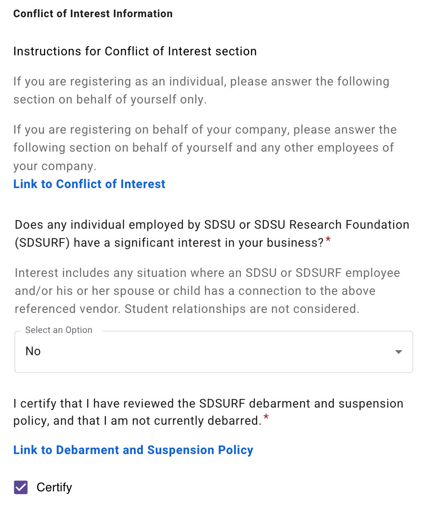
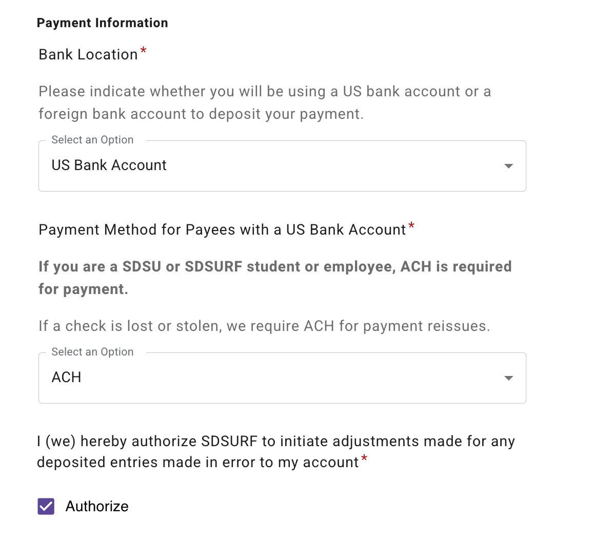
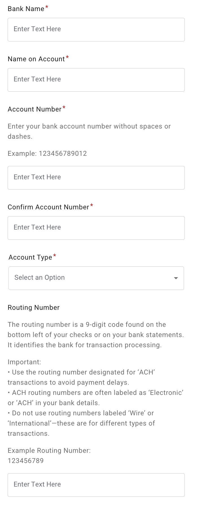
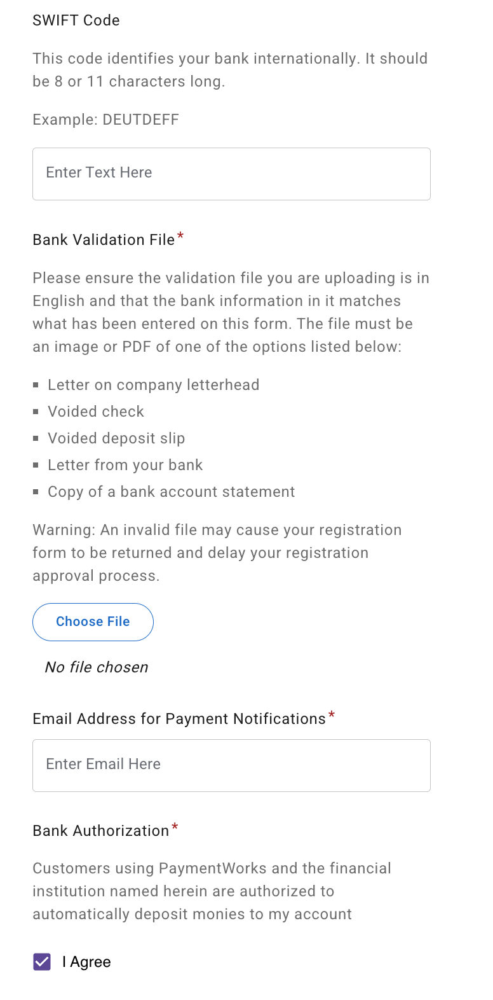

Reimbursement for US Individual
For tax purposes which best describes you?
The refund will goes directly to you, so you may choose “individual or sole proprietorship” 
Provide your tax information

Generate Electronic W-9
If you are:
- a U.S. citizen, green card holder, or U.S. tax resident (resident alien), and
- you have a valid SSN or EIN, and
- you have NOT received any official notice from the IRS stating that you are subject to backup withholding,
then you may generally select:
- Generate Electronic W-9 → Yes
- Backup Withholding → leave this box checked
- Citizenship → U.S. citizen or other U.S. person

Personal and Address Information
Remittance Address:
Address where payment should be sent (e.g., check mailing address).


Additional Information
- In general, you can simply complete it by following what is shown in the image.
- If you are SDSU/SDSURF student or employee you will need to fill your sdsuid
- These questions apply mainly to established businesses.
- Do you accept credit cards? Do you accept Purchase Orders? Individuals can usually select No 
Additional Information
- In general, you can simply complete it by following what is shown in the image.
- If you are SDSU/SDSURF student or employee you will need to fill your sdsuid
- These questions apply mainly to established businesses.
- Do you accept credit cards? Do you accept Purchase Orders? Individuals can usually select No
Conflict of interest
In general, choose No as most of us just requesting travel reimbursement. 
Payment and banking information
ACH is recommended for direct deposit to your bank account. 
Provide Your Bank Information

The backup document is used to verify that the information entered on the registration form is accurate.
A document that includes your bank routing number and your full bank account number is preferred.

Bank Address Information
The bank address does not have to be the branch where you originally opened your account.
For example, if your bank account is with Chase, you may enter the address of any Chase branch that is close to you.